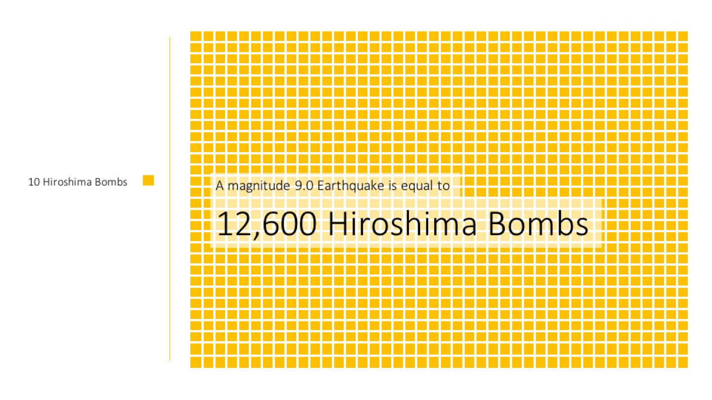
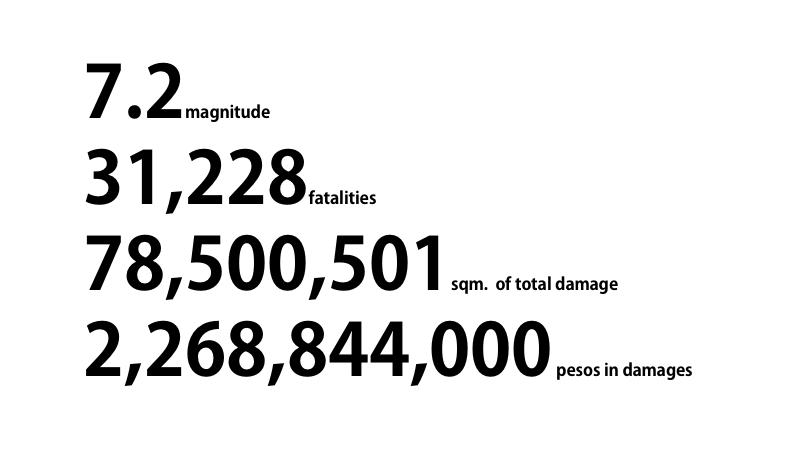

Earthquakes in numbers
Earthquakes occur every day. You don't feel most of these earthquakes but sometimes huge earthquakes happen and can cost thousands of lives. Here we summarize and visualize earthquake data, magnitudes, locations, and casualties from 1965 to 2016.
World Earthquake Map
Earthquakes occur along Tectonic Plate boundaries. One of these boundaries is the famous Pacific Ring of Fire. For example, between 1965 and 2016, the Philippines, a country along the Pacific Ring of Fire, experienced 5 to 43 earthquakes annually, considering only those with at least magnitude of 5.5.

Earthquakes Over Time
In the visualization below, you can move the slider to adjust the date to show the earthquakes that occurred on that date.

Energy from Earthquakes
It is estimated that the magnitude of 9.0 earthquake is equal to 12,600 Hiroshima bombs.

Earthquakes per Country

Worldwide Death Toll
The areas with most number of deaths occurred in densely populated areas. Around 50 percent of the total number of casualties from 1965 to 2016 came from only three countries: China, Indonesia, and Haiti.

Earthquake Histogram
Historically, there were a lot of low-magnitude earthquakes and very few high-magnitude earthquakes.

Projected Impact of "The Big One"
It is projected that "The Big One" will create a massive devastation to human lives.

Get Prepared
The "Big One" is coming but we don't know when. However, we can prepare ourselves in case the event will happen. Here are some tips on what to do before, during, and after an earthquake.
Before an Earthquake
It is best to build your emergency kit that contains necessities such as food, water, medicine, gloves, and important family documents. Also, include an emergency plan in your emergency kit. Emergency plan provides maps, routes, and contact information. It is best to coordinate with your baranggay regarding your emergency plan.
During an Earthquake
Do not panic. Get your emergency kit and follow your emergency plan. Get updates from media and follow public announcements.
After an Earthquake
Stay away from telephone wires, eletrical posts, and broken glass to prevent any possible injuries. If possible, remain updated with public announcements and stay calm. Use your emergency plan to keep in touch government.
References
Learn more about earthquakes by checking the links below.
AIM-MSDS Learning Team 4
Prince Javier
Mark Orencia
Lorenzo Sta. Maria
Miguel Valdez
DVS Final Project under Prof. Erika Legara